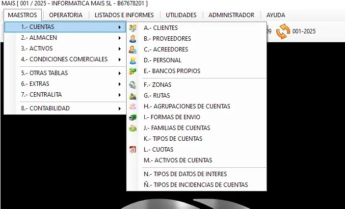
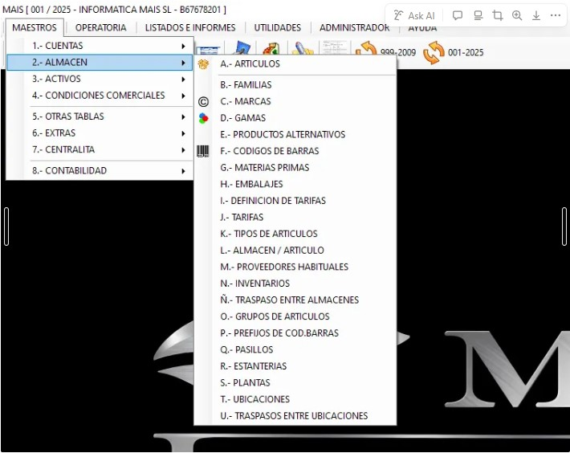
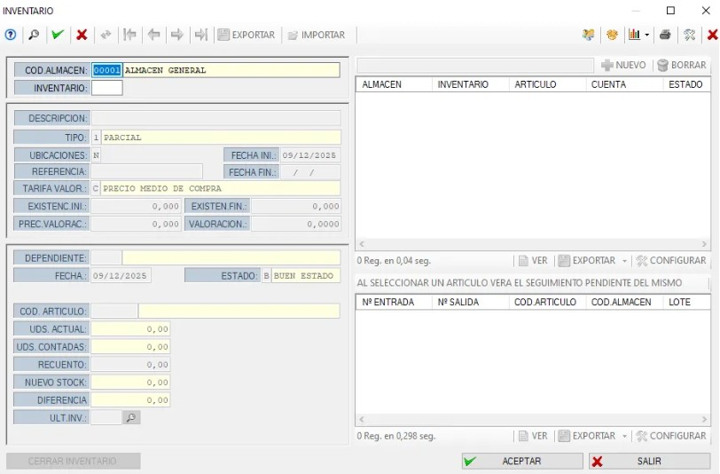

Botón de Maestros

Dentro de este apartado podremos acceder a:
- Clientes
- Proveedores
- Formas de envío
- Bancos propios (Si no aparece ninguno, consultar con la empresa MAIS)
Desde aquí también se pueden crear clientes, proveedores y otros elementos maestros.
Cómo hacer un Inventario

La ruta para crear o ajustar inventarios es:
MAESTROS → ALMACÉN → N. INVENTARIOS
También es posible colocar un acceso directo en el panel general para ir más rápido.
Acceso a Inventarios
Al entrar, veremos una ventana como esta:

Campos principales:
- Cod. Almacén: Por defecto será 00001 si trabajamos con un almacén general. (Si existe más de un almacén, cada uno tendrá su propio código.)
- Inventario: Pulsamos F2 para ver inventarios existentes y asignar el siguiente número automático.
- Descripción, Tipo y Dependiente: Rellenamos estos campos según corresponda.
Añadir artículos al inventario
En Cod. Artículo:
- Pulsamos F2 para ver todos los artículos del MAIS.
- Abajo veremos las unidades actuales en stock.
- En la casilla Recuento, ponemos las unidades que queremos sumar al inventario (esto sirve para ajustar el stock real).
- Pulsamos Añadir.
- El sistema pedirá un precio medio de compra:
- Normalmente aparecerá una ventana recomendando la tarifa de venta actual.
- Debemos poner la misma tarifa.
✔️ Finalizar el Inventario
Cuando hayamos introducido todas las líneas (todos los artículos):
- Pulsamos Aceptar
- El sistema sumará las unidades indicadas al stock
Este proceso actualiza automáticamente el inventario real del almacén.